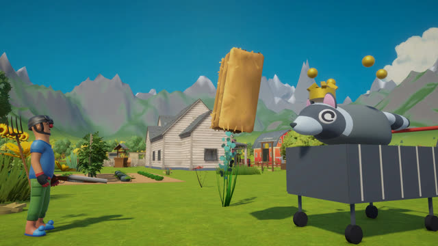
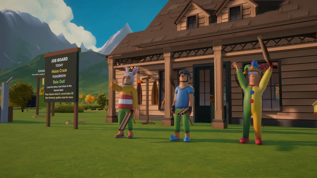

<title>Farmers Fellowship Pitch</title>
<meta name="claude:viewport-fit-sides" content="cover">
<link rel="preconnect" href="https://fonts.googleapis.com">
<link rel="stylesheet" href="https://fonts.googleapis.com/css2?family=Nunito:wght@700;800;900&family=Inter:wght@400;500;600&display=swap">
<style>
/* Layout: a pitch document in chapters; each chapter is a full-width band with a narrow reading column, the roadmap is a horizontal track of quarters. */
:root {
  --bg: #FFF6E3;
  --panel: #FFFFFF;
  --band: #FBEBCB;
  --fg: #2B1A0E;
  --muted: #6B5440;
  --line: rgba(43,26,14,.14);
  --hay: #FFD23F;
  --hay-ink: #2B1A0E;
  --barn: #C8372D;
  --grass: #3F7D22;
  --sky: #2F7FB3;
  --done: #3F7D22;
  --now: #C8372D;
  --next: #8A6A4A;
  --display: "Nunito", "Arial Rounded MT Bold", system-ui, sans-serif;
  --body: "Inter", system-ui, -apple-system, "Segoe UI", sans-serif;
}
@media (prefers-color-scheme: dark) {
  :root:not([data-theme="light"]) {
    --bg: #1E140C; --panel: #2B1E14; --band: #261A10; --fg: #FBEBCB; --muted: #C7AE8F;
    --line: rgba(251,235,203,.14); --barn: #E8584B; --grass: #7CC24E; --sky: #6FB7E6;
    --done: #7CC24E; --now: #FF7A6B; --next: #C7AE8F; color-scheme: dark;
  }
}
:root[data-theme="dark"] {
  --bg: #1E140C; --panel: #2B1E14; --band: #261A10; --fg: #FBEBCB; --muted: #C7AE8F;
  --line: rgba(251,235,203,.14); --barn: #E8584B; --grass: #7CC24E; --sky: #6FB7E6;
  --done: #7CC24E; --now: #FF7A6B; --next: #C7AE8F; color-scheme: dark;
}
* { box-sizing: border-box; }
body { background: var(--bg); color: var(--fg); font: 400 16px/1.6 var(--body); margin: 0; }
h1, h2, h3, h4 { font-family: var(--display); font-weight: 900; line-height: 1.1; margin: 0; text-wrap: balance; }
h2 { font-size: clamp(1.9rem, 4vw, 2.7rem); }
h3 { font-size: 1.2rem; font-weight: 800; }
p { margin: 0; }
a { color: var(--barn); }
img, video { max-width: 100%; display: block; }
.band { padding-block: 72px; padding-left: max(16px, env(safe-area-inset-left, 0px)); padding-right: max(16px, env(safe-area-inset-right, 0px)); }
.band.alt { background: var(--band); }
.wrap { max-width: 1080px; margin: 0 auto; display: grid; gap: 28px; }
.read { max-width: 68ch; }
.eyebrow { font: 800 .78rem/1 var(--display); letter-spacing: .14em; text-transform: uppercase; color: var(--barn); display: flex; gap: 10px; align-items: center; }
.eyebrow b { background: var(--hay); color: var(--hay-ink); padding: 4px 8px; border-radius: 6px; letter-spacing: .06em; }
.lede { font-size: 1.12rem; color: var(--muted); }
.muted { color: var(--muted); }
.grid2 { display: grid; grid-template-columns: 1fr 1fr; gap: 24px; }
.grid3 { display: grid; grid-template-columns: repeat(3, 1fr); gap: 20px; }
.grid2 > *, .grid3 > * { min-width: 0; }
@media (max-width: 820px) { .grid2, .grid3 { grid-template-columns: 1fr; } }

/* Cover */
.cover { background: #2B1A0E; color: #FFF6E3; padding-block: 56px 64px; padding-left: max(16px, env(safe-area-inset-left, 0px)); padding-right: max(16px, env(safe-area-inset-right, 0px)); position: relative; overflow: hidden; }
.cover .wrap { position: relative; z-index: 1; grid-template-columns: 1.1fr 1fr; align-items: center; gap: 40px; }
.cover .eyebrow { color: #FFD23F; }
.cover img.logo { width: min(520px, 100%); margin: 18px 0 14px; }
.cover .pitch { font: 800 clamp(1.25rem, 2.4vw, 1.6rem)/1.3 var(--display); }
.cover .sub { color: #E9D6B5; margin-top: 12px; max-width: 52ch; }
.cover figure { margin: 0; border: 4px solid #000; border-radius: 18px; overflow: hidden; box-shadow: 8px 8px 0 #000; transform: rotate(1.2deg); }
.cover figure video { width: 100%; aspect-ratio: 16/9; object-fit: cover; }
.cover figcaption { background: #000; color: #FFD23F; font: 800 .8rem var(--display); padding: 6px 12px; letter-spacing: .04em; }
@media (max-width: 820px) { .cover .wrap { grid-template-columns: 1fr; } }
.facts { display: grid; grid-template-columns: repeat(6, 1fr); gap: 1px; background: rgba(255,246,227,.18); border: 1px solid rgba(255,246,227,.18); border-radius: 14px; overflow: hidden; margin-top: 8px; }
.facts div { background: #2B1A0E; padding: 14px 12px; }
.facts b { display: block; font: 900 1.6rem/1 var(--display); color: #FFD23F; font-variant-numeric: tabular-nums; }
.facts span { font-size: .8rem; color: #E9D6B5; }
@media (max-width: 820px) { .facts { grid-template-columns: repeat(3, 1fr); } }
.cover .wide { grid-column: 1 / -1; }

/* Contents */
.toc { display: flex; flex-wrap: wrap; gap: 8px; }
.toc a { text-decoration: none; color: var(--fg); border: 1px solid var(--line); background: var(--panel); padding: 6px 12px; border-radius: 999px; font-weight: 600; font-size: .9rem; }
.toc a:hover { border-color: var(--barn); color: var(--barn); }

/* Pillars */
.pillar { background: var(--panel); border: 1px solid var(--line); border-radius: 16px; overflow: hidden; display: flex; flex-direction: column; }
.pillar img { aspect-ratio: 16/9; object-fit: cover; width: 100%; }
.pillar div { padding: 18px 20px 20px; display: grid; gap: 8px; }
.pillar p { color: var(--muted); font-size: .96rem; }

/* Loop */
.loop { display: flex; flex-wrap: wrap; gap: 10px; align-items: stretch; }
.loop .step { flex: 1 1 150px; background: var(--panel); border: 2px solid var(--fg); border-radius: 14px; padding: 14px; display: grid; gap: 4px; position: relative; }
.loop .step b { font: 900 1.05rem var(--display); }
.loop .step span { font-size: .88rem; color: var(--muted); }
.loop .arrow { align-self: center; font: 900 1.4rem var(--display); color: var(--barn); }
@media (max-width: 820px) { .loop .arrow { display: none; } }
.loop-note { font-size: .92rem; color: var(--muted); }

/* Tables */
.tbl { overflow-x: auto; border: 1px solid var(--line); border-radius: 14px; background: var(--panel); }
table { width: 100%; border-collapse: collapse; font-size: .95rem; }
th, td { text-align: left; padding: 11px 14px; border-bottom: 1px solid var(--line); vertical-align: top; }
th { font: 800 .78rem var(--display); letter-spacing: .08em; text-transform: uppercase; color: var(--muted); background: var(--band); }
tr:last-child td { border-bottom: 0; }
td.num, th.num { text-align: right; font-variant-numeric: tabular-nums; white-space: nowrap; }
tfoot td { font-weight: 700; background: var(--band); }

/* Status lists */
.checks { list-style: none; padding: 0; margin: 0; display: grid; gap: 8px; }
.checks li { display: grid; grid-template-columns: 22px 1fr; gap: 10px; align-items: start; }
.checks li::before { content: ""; width: 18px; height: 18px; margin-top: 3px; border-radius: 5px; border: 2px solid var(--done); background: var(--done); box-shadow: inset 0 0 0 2px var(--panel); }
.checks.todo li::before { background: transparent; border-color: var(--next); box-shadow: none; }

/* Roadmap */
.road { overflow-x: auto; padding-bottom: 6px; }
.road ol { list-style: none; margin: 0; padding: 0; display: grid; grid-template-columns: repeat(7, minmax(190px, 1fr)); gap: 0; min-width: 1330px; position: relative; }
.road li { padding: 0 14px 0 0; position: relative; }
.road .rail { height: 10px; background: var(--next); opacity: .35; margin: 12px 0 18px; }
.road li.done .rail { background: var(--done); opacity: 1; }
.road li.now .rail { background: linear-gradient(90deg, var(--done) 0 40%, var(--now) 40%); opacity: 1; }
.road li:first-child .rail { border-radius: 6px 0 0 6px; }
.road li:last-child .rail { border-radius: 0 6px 6px 0; }
.road .q { font: 900 1rem var(--display); }
.road .when { font-size: .8rem; color: var(--muted); font-variant-numeric: tabular-nums; }
.road .tag { display: inline-block; font: 800 .68rem var(--display); letter-spacing: .08em; text-transform: uppercase; padding: 2px 8px; border-radius: 999px; margin-top: 6px; border: 1.5px solid currentColor; }
.road li.done .tag { color: var(--done); }
.road li.now .tag { color: var(--now); }
.road li.next .tag { color: var(--next); }
.road ul { margin: 10px 0 0; padding-left: 16px; font-size: .9rem; display: grid; gap: 6px; }
.road .gate { display: block; margin-top: 12px; font: 800 .82rem var(--display); color: var(--barn); }
.legend { display: flex; flex-wrap: wrap; gap: 16px; font-size: .85rem; color: var(--muted); }
.legend span::before { content: ""; display: inline-block; width: 22px; height: 8px; border-radius: 4px; margin-right: 6px; vertical-align: 1px; background: var(--c); }

/* Farms */
.farm { background: var(--panel); border: 1px solid var(--line); border-radius: 14px; padding: 16px 18px; display: grid; gap: 6px; }
.farm .job { font: 800 .8rem var(--display); color: var(--barn); letter-spacing: .06em; text-transform: uppercase; }
.farm p { font-size: .92rem; color: var(--muted); }
.farm.shipped { border: 2px solid var(--done); }

/* Budget bar */
.bar { display: flex; height: 26px; border-radius: 8px; overflow: hidden; border: 1px solid var(--line); }
.bar span { display: block; height: 100%; }
.sw { display: inline-block; width: 12px; height: 12px; border-radius: 3px; margin-right: 8px; vertical-align: -1px; }

.callout { border: 2px dashed var(--barn); border-radius: 14px; padding: 16px 18px; background: var(--panel); }
.callout h3 { color: var(--barn); margin-bottom: 6px; }
.callout ul { margin: 6px 0 0; padding-left: 18px; }

.support { display: grid; grid-template-columns: repeat(2, 1fr); gap: 14px; }
.support div { background: var(--panel); border: 1px solid var(--line); border-radius: 14px; padding: 16px 18px; display: grid; gap: 6px; }
.support .pri { font: 800 .72rem var(--display); letter-spacing: .1em; text-transform: uppercase; color: var(--barn); }
.support p { color: var(--muted); font-size: .93rem; }
@media (max-width: 820px) { .support { grid-template-columns: 1fr; } }

footer { padding-block: 32px 48px; padding-left: max(16px, env(safe-area-inset-left, 0px)); padding-right: max(16px, env(safe-area-inset-right, 0px)); color: var(--muted); font-size: .88rem; }
footer .wrap { gap: 6px; }
:focus-visible { outline: 3px solid var(--barn); outline-offset: 2px; }
@media (prefers-reduced-motion: reduce) { .cover figure { transform: none; } }
</style>

<header class="cover">
  <div class="wrap">
    <div>
      <div class="eyebrow">Unity Fellowship 2027 · Application pitch</div>
      
      <p class="pitch">A co-op physics farming game for 1–4 friends, where the whole day's harvest rides on one very wobbly trailer.</p>
      <p class="sub">By Pixel Studio, the team behind <a href="https://santaslegacy.ro/" style="color:#FFD23F">Santa's Legacy</a>. Made in Unity. Playable build available, Windows, Steam.</p>
    </div>
    <figure>
      <video autoplay muted loop playsinline poster="assets/img/thumbs/stacked-trailer.jpg" aria-label="Gameplay loop: stacking the trailer, bales flying at a bump, the combine, the bale tower, the Raccoon King">
        <source src="assets/video/hero-loop.mp4" type="video/mp4">
      </video>
      <figcaption>IN-ENGINE FOOTAGE · BUILD v0.1.0</figcaption>
    </figure>
    <div class="facts wide" role="list">
      <div role="listitem"><b>1–4</b><span>players, drop-in online co-op</span></div>
      <div role="listitem"><b>4</b><span>farm jobs</span></div>
      <div role="listitem"><b>28</b><span>catalogue upgrades</span></div>
      <div role="listitem"><b>10</b><span>farm maps</span></div>
      <div role="listitem"><b>446</b><span>automated tests</span></div>
      <div role="listitem"><b>Aug 2027</b><span>target launch</span></div>
    </div>
  </div>
</header>

<section class="band">
  <div class="wrap">
    <nav class="toc" aria-label="Contents">
      <a href="#vision">Vision</a><a href="#video">Video &amp; build</a><a href="#design">Game design</a><a href="#status">Where we are</a><a href="#roadmap">Roadmap</a><a href="#launch">Launch version</a><a href="#goals">Use of the Fellowship</a><a href="#risks">Risks</a><a href="#publisher">Publisher</a><a href="#checklist">Application checklist</a>
    </nav>
  </div>
</section>

<!-- VISION -->
<section class="band alt" id="vision">
  <div class="wrap">
    <div class="read" style="display:grid;gap:12px">
      <div class="eyebrow"><b>01</b> Vision</div>
      <h2>Farming is a physics problem, and you share it with friends</h2>
      <p class="lede">Co-op "friendslop" games are about simple jobs that go wrong together. Farmers makes the job physical: every bale, cob, potato, pumpkin, pig and farmer is a simulated object, and the money only arrives if the load reaches the market in one piece.</p>
    </div>
    <div class="grid3">
      <article class="pillar">
        
        <div><h3>The load is the game</h3><p>A hitched flatbed that sways, bounces and jackknifes. Stack it high, ride on top while a friend drives, and watch it come apart at the bump. Nothing is scripted, so no two disasters are the same.</p></div>
      </article>
      <article class="pillar">
        
        <div><h3>Thieves with personality</h3><p>Raccoons team up to carry off round bales, crows dive for cobs, Gus the Goose takes the tractor key. The Raccoon King ropes your whole trailer to his shopping cart. You fight back with the same physics: bales, eggs, tractors.</p></div>
      </article>
      <article class="pillar">
        
        <div><h3>No game over</h3><p>No quota, no foreclosure. A shared wallet, a catalogue of machines and gadgets, weekly goals and a Farm Level. Sessions end with awards like "Best Driver (allegedly)" and a crew that wants one more day.</p></div>
      </article>
    </div>
    <p class="muted read">Inspired by the structure of How to Fish and the chaos of R.E.P.O. and Lethal Company. Our difference is the hauling: vehicles, trailers and loads that every player handles at once, synced across up to four machines.</p>
  </div>
</section>

<!-- VIDEO & BUILD -->
<section class="band" id="video">
  <div class="wrap">
    <div class="read" style="display:grid;gap:12px">
      <div class="eyebrow"><b>02</b> Video &amp; playable build</div>
      <h2>What we'll submit</h2>
    </div>
    <div class="grid2">
      <div class="callout" style="border-style:solid;border-color:var(--line)">
        <h3 style="color:var(--fg)">Trailer, 0:53</h3>
        <p class="muted">Every shot is filmed in-engine by our own scripted camera kit (puppet farmers, dolly and crane moves, 240 fps slow motion), cut in Remotion. Every gameplay shot shows at least two farmers. It covers bales, the combine, thieves, the fair and the Raccoon King.</p>
        <p style="margin-top:10px"><b>File:</b> <code>Farmers-Trailer-v2.mp4</code> (1080p). Upload it unlisted and paste the link in the application.</p>
      </div>
      <div class="callout" style="border-style:solid;border-color:var(--line)">
        <h3 style="color:var(--fg)">Playable build v0.1.0</h3>
        <p class="muted">Windows development build of the first farm, Muddy Acres (all four jobs, the fair, the Raccoon King). Solo works offline; co-op over LAN or an online join code. One-command build pipeline, per-session logs and crash reporting.</p>
        <p style="margin-top:10px"><b>File:</b> <code>Farmers-v0.1.0-…-win64.zip</code>. Rebuild just before submitting.</p>
      </div>
    </div>
  </div>
</section>

<!-- DESIGN -->
<section class="band alt" id="design">
  <div class="wrap">
    <div class="read" style="display:grid;gap:12px">
      <div class="eyebrow"><b>03</b> Game design</div>
      <h2>The core loop</h2>
      <p class="lede">Each morning the job board on the porch decides what grows back and what the crew works on.</p>
    </div>
    <div class="loop" aria-label="Core loop">
      <div class="step"><b>Pick a job</b><span>Bale Out!, Maize Craze, Hog Wild or Spud Rush</span></div>
      <div class="arrow" aria-hidden="true">→</div>
      <div class="step"><b>Harvest</b><span>Lift, throw, cut, dig. Round bales and pigs take two.</span></div>
      <div class="arrow" aria-hidden="true">→</div>
      <div class="step"><b>Haul</b><span>Stack the trailer and drive it to the Market Stall.</span></div>
      <div class="arrow" aria-hidden="true">→</div>
      <div class="step"><b>Sell</b><span>Prices flood and recover. Rescued loot and trick shots pay extra.</span></div>
      <div class="arrow" aria-hidden="true">→</div>
      <div class="step"><b>Upgrade</b><span>Machines, land, livestock and gadgets from the shared catalogue.</span></div>
      <div class="arrow" aria-hidden="true">↺</div>
    </div>
    <p class="loop-note">Ring the dinner bell whenever the crew is ready: beating the Raccoon King unlocks the next farm. Thieves raid the whole time, more at night.</p>

    <div class="tbl">
      <table>
        <thead><tr><th>System</th><th>What it does</th><th>Status</th></tr></thead>
        <tbody>
          <tr><td><b>Jobs</b></td><td>Bale Out! (hay), Maize Craze (combine, 2.5 m corn, cob crows), Hog Wild (six greased pigs, mud, a pen gate raccoons open), Spud Rush (potato harvester, tipping a bin of 168 potatoes)</td><td>Built</td></tr>
          <tr><td><b>Physics play</b></td><td>Two-farmer lifts, eight trick shots, ragdoll knockdowns, carrying and throwing a crewmate, riding vehicles, breakable fences, mud bogs, oil slicks</td><td>Built</td></tr>
          <tr><td><b>Machines</b></td><td>Four tractors, two combines, trailers, Bale Spike, Potato Harvester. Engines wear, leak oil and break down</td><td>Built</td></tr>
          <tr><td><b>Thieves</b></td><td>Raccoons (team lifts, flee home), Kernel Crows, Gus the Goose, the Raccoon King boss. Counters: slingshot, scarecrow, zapper gates, guard geese, hay cannon</td><td>Built</td></tr>
          <tr><td><b>Fairground</b></td><td>Greased Pig, Hay Bale Bowling, Bale Tower. Skill games, no gambling</td><td>Built</td></tr>
          <tr><td><b>Farm life</b></td><td>Pumpkins grown by size, hens, ducks, sheep and cows, a hired farmhand, day and night, the porch bed</td><td>Built</td></tr>
          <tr><td><b>Progression</b></td><td>Weeks and weekly goals, Farm Level, 18 feats, Ribbons for cosmetics, end-of-day awards, 36 achievements</td><td>Built</td></tr>
          <tr><td><b>Social</b></td><td>Emote wheel, pings, wardrobe, photo mode with instant replays of knockdowns</td><td>Built</td></tr>
          <tr><td><b>Online</b></td><td>Join codes (Unity Multiplayer Services), LAN, solo. Steam invites and proximity voice next</td><td>Partly</td></tr>
          <tr><td><b>Farms 2–5</b></td><td>Each adds a second job, a new physics problem and its own thief</td><td>Designed</td></tr>
        </tbody>
      </table>
    </div>

    <div class="grid2">
      <div style="display:grid;gap:10px">
        <h3>Tech built for a physics co-op game</h3>
        <p class="muted">The host simulates the tractor, the trailer and every good, so a stacked load looks the same to everyone. Players move themselves for instant feel. Riders on a moving trailer attach to the vehicle and agree across machines within about 2 cm.</p>
      </div>
      <div style="display:grid;gap:10px">
        <h3>Engineering</h3>
        <p class="muted">Unity 7 with URP and Netcode for GameObjects. About 40,000 lines of C# with dependency injection (Zenject) throughout, 19 reusable in-house packages (grab, ride, ragdoll, wheels, sessions, achievements…) and 446 automated tests, including a play-mode smoke test of a whole day.</p>
      </div>
    </div>
  </div>
</section>

<!-- STATUS -->
<section class="band" id="status">
  <div class="wrap">
    <div class="read" style="display:grid;gap:12px">
      <div class="eyebrow"><b>04</b> Where we are</div>
      <h2>Muddy Acres is feature-complete for the demo</h2>
      <p class="lede">Nine milestones are done. The first farm has all four of its jobs, the fair and the boss. What's left before the demo is mostly online features, art, music and playtesting.</p>
    </div>
    <div class="grid2">
      <div style="display:grid;gap:12px">
        <h3>Done</h3>
        <ul class="checks">
          <li>M1–M3: setup, local player, networking (solo, LAN, join codes)</li>
          <li>M4–M5: tractor and trailer, riding, two-farmer lifts, ragdolls</li>
          <li>M6: market, flooding prices, catalogue, day and night, saving</li>
          <li>M7: raccoons, crows and the Raccoon King</li>
          <li>M8–M9: Maize Craze, the fairground, Hog Wild</li>
          <li>Demo polish: Spud Rush, pumpkins, livestock, mud, breakdowns, weeks and Farm Level, cosmetics, emotes, awards, achievements, gamepad and Steam Deck layout, settings and rebinding</li>
          <li>10 farm maps, menu scene, async loading</li>
          <li>Trailer, website and press kit</li>
        </ul>
      </div>
      <div style="display:grid;gap:12px">
        <h3>Still to do for the demo</h3>
        <ul class="checks todo">
          <li>Link Unity Cloud and run a 4-player test over the internet</li>
          <li>Steam invites (Steamworks) and Steam achievements</li>
          <li>Proximity voice chat</li>
          <li>Original banjo-and-tuba music and a Raccoon King theme</li>
          <li>Art: the King's cart (greybox now) and catalogue page art</li>
          <li>Three external playtest groups who have never seen the game</li>
          <li>Steam store page, capsule art, wishlists</li>
          <li>Credits and licences for every third-party asset</li>
        </ul>
      </div>
    </div>
  </div>
</section>

<!-- ROADMAP -->
<section class="band alt" id="roadmap">
  <div class="wrap">
    <div class="read" style="display:grid;gap:12px">
      <div class="eyebrow"><b>05</b> Roadmap</div>
      <h2>From one farm to five, launch in August 2027</h2>
      <p class="lede">The Fellowship starts in March 2027, the same month as our demo and five months before launch: the final stretch, where outside help counts most. Later farms are built once the demo is out, so they follow what players tell us.</p>
    </div>
    <div class="legend"><span style="--c:var(--done)">Done</span><span style="--c:var(--now)">In progress</span><span style="--c:var(--next)">Planned</span></div>
    <div class="road" tabindex="0" aria-label="Roadmap by quarter, scrolls sideways">
      <ol>
        <li class="done">
          <div class="rail"></div>
          <div class="q">Q4 2026</div><div class="when">Oct–Nov</div><span class="tag">Done</span>
          <ul>
            <li>M1–M9: the full Muddy Acres loop</li>
            <li>Demo polish systems</li>
            <li>Playable build v0.1.0</li>
            <li>Trailer, website, press kit</li>
          </ul>
        </li>
        <li class="now">
          <div class="rail"></div>
          <div class="q">Q4 2026</div><div class="when">Dec</div><span class="tag">Now</span>
          <ul>
            <li>Internet 4-player test</li>
            <li>First outside playtests</li>
            <li>Economy balance from playtest logs</li>
          </ul>
          <span class="gate">Dec 18: Fellowship application</span>
        </li>
        <li class="next">
          <div class="rail"></div>
          <div class="q">Jan–Feb 2027</div><div class="when">Steam groundwork</div><span class="tag">Planned</span>
          <ul>
            <li>Steam page live, wishlists open</li>
            <li>Steam invites and achievements</li>
            <li>Proximity voice chat</li>
            <li>Music commission, King's cart art</li>
          </ul>
        </li>
        <li class="next">
          <div class="rail"></div>
          <div class="q">Mar–Apr 2027</div><div class="when">Demo</div><span class="tag">Planned</span>
          <ul>
            <li>Free Steam demo: Muddy Acres</li>
            <li>Onboarding and first-day tutorial from demo feedback</li>
            <li>Farm 2: Pumpkin Hills (Hayride Havoc)</li>
          </ul>
          <span class="gate">March: Fellowship begins · demo out</span>
        </li>
        <li class="next">
          <div class="rail"></div>
          <div class="q">May–Jun 2027</div><div class="when">New farms</div><span class="tag">Planned</span>
          <ul>
            <li>Farm 3: Henhouse Hollow (Buzz Off)</li>
            <li>Farm 4: Cow Country (Milk Run)</li>
            <li>A new thief and boss per farm</li>
          </ul>
        </li>
        <li class="next">
          <div class="rail"></div>
          <div class="q">Jul 2027</div><div class="when">Content lock</div><span class="tag">Planned</span>
          <ul>
            <li>Farm 5: Woolly Peaks (Shear Madness)</li>
            <li>Localisation, Steam Deck verification</li>
            <li>Closed beta with demo players</li>
          </ul>
          <span class="gate">Content lock</span>
        </li>
        <li class="next">
          <div class="rail"></div>
          <div class="q">Aug 2027</div><div class="when">Launch</div><span class="tag">Target</span>
          <ul>
            <li>Performance and netcode hardening</li>
            <li>Launch trailer and press</li>
          </ul>
          <span class="gate">Launch on Steam</span>
        </li>
      </ol>
    </div>
  </div>
</section>

<!-- LAUNCH -->
<section class="band" id="launch">
  <div class="wrap">
    <div class="read" style="display:grid;gap:12px">
      <div class="eyebrow"><b>06</b> The launch version</div>
      <h2>Five farms, ten jobs, five bosses</h2>
      <p class="lede">Each farm launches with two jobs, so the job board always offers a choice. Each new job is one physics problem built on systems that already exist.</p>
    </div>
    <div class="grid3">
      <div class="farm shipped"><span class="job">Built · Farm 1</span><h3>Muddy Acres</h3><p>Bale Out!, Maize Craze, Hog Wild, Spud Rush. Boss: the Raccoon King.</p></div>
      <div class="farm"><span class="job">Farm 2 · Hayride Havoc</span><h3>Pumpkin Hills</h3><p>Keep floppy tourists on a bouncing hay wagon while they wander off towards the pumpkins. Reuses the trailer and ragdolls.</p></div>
      <div class="farm"><span class="job">Farm 3 · Buzz Off</span><h3>Henhouse Hollow</h3><p>Move beehives without bumping them. A swarm chases the nearest farmer; water loses it. Smoker upgrade.</p></div>
      <div class="farm"><span class="job">Farm 4 · Milk Run</span><h3>Cow Country</h3><p>Drive milk churns that spill on hard bumps. The dairy pays by fill level. Reuses the knockdown hit detection.</p></div>
      <div class="farm"><span class="job">Farm 5 · Shear Madness</span><h3>Woolly Peaks</h3><p>One farmer holds the sheep, one shears it, and loose fleece blows away on the wind.</p></div>
      <div class="farm"><span class="job">Across all farms</span><h3>Launch features</h3><p>Steam invites, voice chat, Steam achievements, gamepad and Steam Deck, 6 languages, photo mode.</p></div>
    </div>
  </div>
</section>

<!-- GOALS -->
<section class="band alt" id="goals">
  <div class="wrap">
    <div class="read" style="display:grid;gap:12px">
      <div class="eyebrow"><b>07</b> Use of the Fellowship</div>
      <h2>Spend the $50,000 on what we can't build ourselves</h2>
      <p class="lede">We cover code, design, systems and the trailer in-house. The grant would go to the things a small studio can't make alone: an original sound, character art, other languages and enough outside players to test four-player chaos properly.</p>
    </div>
    <div class="bar" aria-hidden="true">
      <span style="width:28%;background:var(--barn)"></span>
      <span style="width:18%;background:#F4A72A"></span>
      <span style="width:16%;background:var(--sky)"></span>
      <span style="width:12%;background:var(--grass)"></span>
      <span style="width:12%;background:#8A6A4A"></span>
      <span style="width:4%;background:#B9A48A"></span>
      <span style="width:10%;background:var(--line)"></span>
    </div>
    <div class="tbl">
      <table>
        <thead><tr><th>Area</th><th>What it pays for</th><th class="num">USD</th></tr></thead>
        <tbody>
          <tr><td><span class="sw" style="background:var(--barn)"></span><b>Character &amp; key art</b></td><td>The Raccoon King's cart, four new farm thieves and bosses, Steam capsule and key art</td><td class="num">14,000</td></tr>
          <tr><td><span class="sw" style="background:#F4A72A"></span><b>Music &amp; sound</b></td><td>Original banjo-and-tuba score, a theme per boss, a mix by ear</td><td class="num">9,000</td></tr>
          <tr><td><span class="sw" style="background:var(--sky)"></span><b>Marketing &amp; festivals</b></td><td>Demo launch push, launch trailer, press outreach, a creator programme</td><td class="num">8,000</td></tr>
          <tr><td><span class="sw" style="background:var(--grass)"></span><b>Playtesting &amp; QA</b></td><td>Paid outside playtest groups, multi-region network testing, compatibility QA</td><td class="num">6,000</td></tr>
          <tr><td><span class="sw" style="background:#8A6A4A"></span><b>Localisation</b></td><td>German, French, Spanish, Portuguese and Brazilian Portuguese (as in Santa's Legacy)</td><td class="num">6,000</td></tr>
          <tr><td><span class="sw" style="background:#B9A48A"></span><b>Test hardware</b></td><td>Steam Deck and low-end PC for performance and verification</td><td class="num">2,000</td></tr>
          <tr><td><span class="sw" style="background:var(--line)"></span><b>Contingency</b></td><td>Fees, taxes withheld on the grant, surprises</td><td class="num">5,000</td></tr>
        </tbody>
        <tfoot><tr><td colspan="2">Total</td><td class="num">50,000</td></tr></tfoot>
      </table>
    </div>

    <h3 style="margin-top:8px">Support that would help most</h3>
    <div class="support">
      <div><span class="pri">Highest</span><h3>Multiplayer and netcode</h3><p>Office hours with Netcode for GameObjects engineers on host-authoritative physics: stacked rigidbodies, riders on moving vehicles and carry lag on clients, before we scale to four players over the internet.</p></div>
      <div><span class="pri">Highest</span><h3>Marketing and launch</h3><p>Help planning the Steam page, the demo and launch beats, and PR at the announcement. Our first game taught us that building is the easy part.</p></div>
      <div><span class="pri">High</span><h3>Engine and performance</h3><p>We're on Unity 7. Guidance on the alpha-to-release path, URP tuning for Steam Deck, and profiling large physics scenes.</p></div>
      <div><span class="pri">Useful</span><h3>Game design and showcase</h3><p>Design review of the onboarding and the late-game economy, and a chance to show Farmers at Unity events, where four players at one booth sells itself.</p></div>
    </div>
  </div>
</section>

<!-- RISKS -->
<section class="band" id="risks">
  <div class="wrap">
    <div class="read" style="display:grid;gap:12px">
      <div class="eyebrow"><b>08</b> Risks</div>
      <h2>What could go wrong, and our plan</h2>
    </div>
    <div class="tbl">
      <table>
        <thead><tr><th>Risk</th><th>Plan</th></tr></thead>
        <tbody>
          <tr><td>Untested with players outside the team</td><td>Playtest logs are already built in (Bucks per minute, thefts, knockdowns, time to first sale). Three outside groups before the demo, then the public Steam demo itself.</td></tr>
          <tr><td>Physics feels laggy for clients online</td><td>The trailer-rider problem is already solved (about 2 cm agreement). Carry lag is next: the carrier will predict the held object locally.</td></tr>
          <tr><td>Seen as a How to Fish clone</td><td>Lead every asset with what's ours: hauling, vehicles, the thieves and the Raccoon King.</td></tr>
          <tr><td>Scope grows past what we can finish</td><td>Later farms wait for the demo. Each new job reuses existing systems (trailer, grab, ragdoll); only one new mechanic per farm.</td></tr>
          <tr><td>Unity 7 alpha changes break something</td><td>Embedded and patched packages are documented; automated tests run after every engine update; decide a release-version lock before content lock.</td></tr>
          <tr><td>The economy runs out of goals</td><td>Weeks, Farm Level and levelled earnings upgrades are in; each new farm adds its own catalogue and a repeatable Bucks sink.</td></tr>
        </tbody>
      </table>
    </div>
  </div>
</section>

<!-- PUBLISHER -->
<section class="band alt" id="publisher">
  <div class="wrap">
    <div class="read" style="display:grid;gap:12px">
      <div class="eyebrow"><b>09</b> Publisher</div>
      <h2>Self-published, open to talking</h2>
      <p class="lede">Farmers has no publisher. Pixel Studio self-published Santa's Legacy on Steam and plans to do the same here. We'd welcome the Fellowship's publisher introductions to compare a partnership for marketing and console ports against going alone.</p>
    </div>
  </div>
</section>

<!-- CHECKLIST -->
<section class="band" id="checklist">
  <div class="wrap">
    <div class="read" style="display:grid;gap:12px">
      <div class="eyebrow"><b>10</b> Application checklist</div>
      <h2>Before December 18, 5:00 PM ET</h2>
      <p class="lede">Applications are in English through Unity's grant platform. Results by the end of February 2027, fellows announced at GDC in March.</p>
    </div>
    <div class="tbl">
      <table>
        <thead><tr><th>Field</th><th>Where it comes from</th><th>Ready?</th></tr></thead>
        <tbody>
          <tr><td><b>Vision</b></td><td>Section 01 of this page</td><td>Draft ready</td></tr>
          <tr><td><b>Video</b></td><td>Trailer v2 (0:53), uploaded unlisted</td><td>Upload</td></tr>
          <tr><td><b>Playable build</b></td><td>Fresh Windows build of Muddy Acres; include the join-code steps</td><td>Rebuild</td></tr>
          <tr><td><b>Roadmap</b></td><td>Sections 04–06</td><td>Draft ready</td></tr>
          <tr><td><b>Goals</b></td><td>Section 07: grant use and support wanted</td><td>Check the numbers</td></tr>
          <tr><td><b>Publisher</b></td><td>Section 09: none</td><td>Draft ready</td></tr>
        </tbody>
      </table>
    </div>
    <div class="callout">
      <h3>Fill in before sending</h3>
      <ul>
        <li>Team: names, roles and how many people work on Farmers.</li>
        <li>Studio location (Unity excludes some regions this cycle, including Brazil, Italy and Quebec).</li>
        <li>Rights: confirm licences for every Asset Store pack and the CC0 audio, and note them in the credits.</li>
        <li>The budget split in section 07 is a proposal. Adjust it to real quotes.</li>
        <li>Link Unity Cloud so the reviewers can play online with join codes, not only solo or LAN.</li>
      </ul>
    </div>
  </div>
</section>

<footer>
  <div class="wrap">
    <p><b>Farmers</b> · Pixel Studio · Pitch prepared 17 November 2026 for the Unity Fellowship 2027.</p>
    <p>Fellowship terms from unity.com/unity-fellowship: $50,000 USD grant, no recoup, no revenue share, no IP claim; for Unity games with a playable build about a year from launch.</p>
  </div>
</footer>
